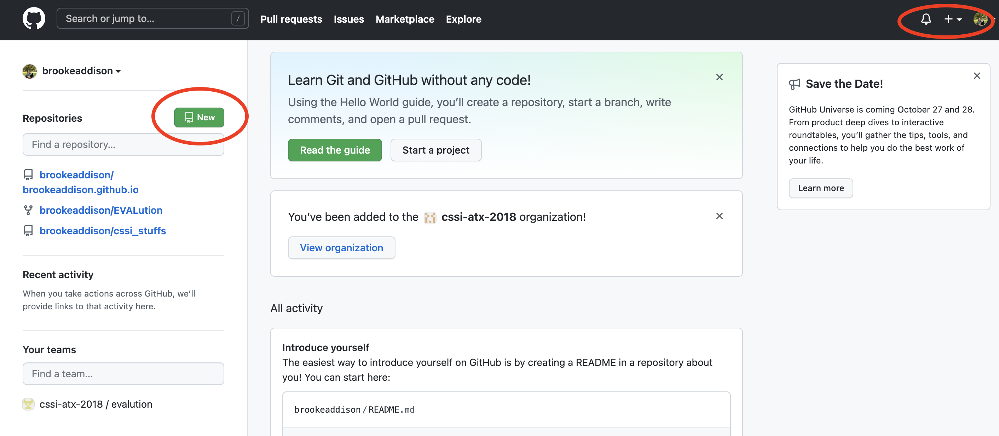
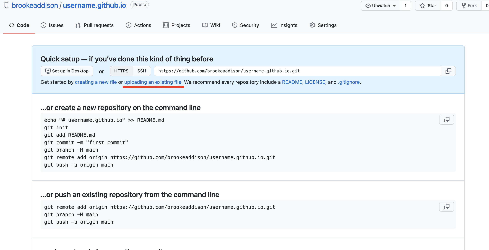

Hey there! I’m going to walk you through how to create yourself a personal web page through GitHub.
The first thing you’re going to want to do is create yourself a GitHub account. You can easily do this through the following link (https://github.com/signup).
In the top right hand corner of your GitHub account page there are three icons including a plus sign with a drop down arrow next to it. Click that icon then click “New Repository.”
 Note: How to create a repository is indicated by a red circle in the above screenshot.As indicated by the red circle, enter: [whatever your username is].github.io From here, as indicated by the red arrow, click Create repository.
You will be sent to a page that looks like this:
In the blue area you will see, “Get started by creating a new file or uploading an existing file. We recommend every repository include a README, LICENSE, and .gitignore.”
At this point you want to go to your editor. I am using VS Code.
Now going back to your GitHub page you can either drag and drop your files or search them up.
Now in a new tab, in the browser, search your repository.